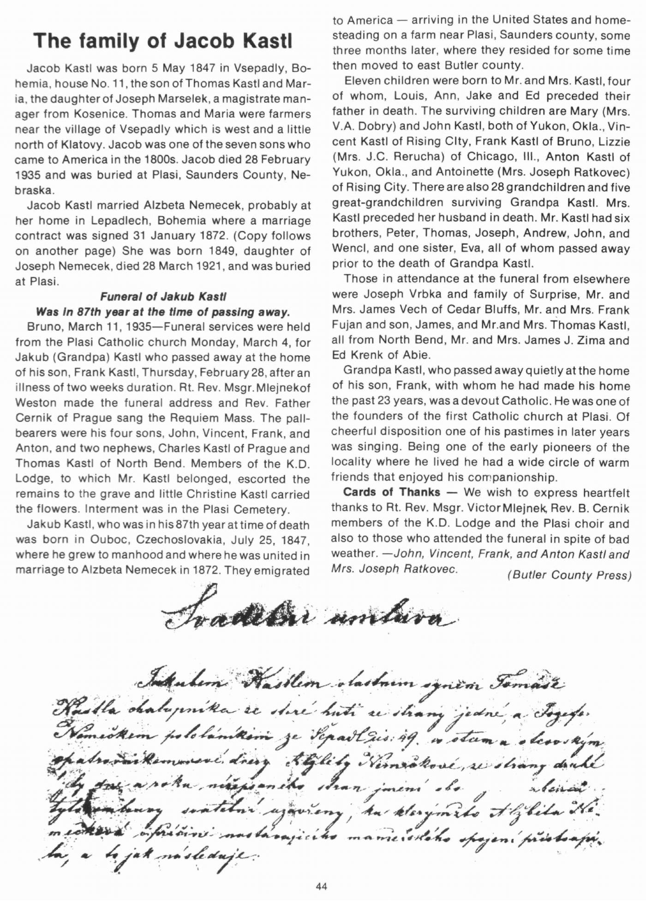
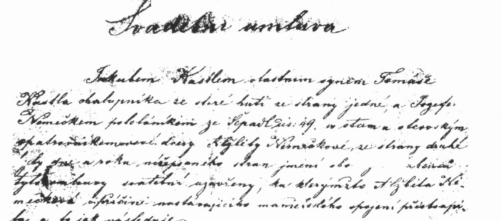

The book · The Family of Jacob Kastl
Page 44 The family of Jacob Kastl


Transcription
The family of Jacob Kastl
Jacob Kastl was born 5 May 1847 in Vsepadly, Bohemia, house No. 11, the son of Thomas Kastl and Maria, the daughter of Joseph Marselek, a magistrate manager from Kosenice. Thomas and Maria were farmers near the village of Vsepadly which is west and a little north of Klatovy. Jacob was one of the seven sons who came to America in the 1800s. Jacob died 28 February 1935 and was buried at Plasi, Saunders County, Nebraska.
Jacob Kastl married Alzbeta Nemecek, probably at her home in Lepadlech, Bohemia where a marriage contract was signed 31 January 1872. (Copy follows on another page) She was born 1849, daughter of Joseph Nemecek, died 28 March 1921, and was buried at Plasi.
Funeral of Jakub Kastl Was in 87th year at the time of passing away.
Bruno, March 11, 1935—Funeral services were held from the Plasi Catholic church Monday, March 4, for Jakub (Grandpa) Kastl who passed away at the home of his son, Frank Kastl, Thursday, February 28, after an illness of two weeks duration. Rt. Rev. Msgr. Mlejnekof Weston made the funeral address and Rev. Father Cernik of Prague sang the Requiem Mass. The pallbearers were his four sons, John, Vincent, Frank, and Anton, and two nephews, Charles Kastl of Prague and Thomas Kastl of North Bend. Members of the K.D. Lodge, to which Mr. Kastl belonged, escorted the remains to the grave and little Christine Kastl carried the flowers. Interment was in the Plasi Cemetery.
Jakub Kastl, who was in his 87th year at time of death was born in Ouboc, Czechoslovakia, July 25, 1847, where he grew to manhood and where he was united in marriage to Alzbeta Nemecek in 1872. They emigrated to America — arriving in the United States and homesteading on a farm near Plasi, Saunders county, some three months later, where they resided for some time then moved to east Butler county.
Eleven children were born to Mr. and Mrs. Kastl, four of whom, Louis, Ann, Jake and Ed preceded their father in death. The surviving children are Mary (Mrs. V.A. Dobry) and John Kastl, both of Yukon, Okla., Vincent Kastl of Rising CIty [sic], Frank Kastl of Bruno, Lizzie (Mrs. J.C. Rerucha) of Chicago, Ill., Anton Kastl of Yukon, Okla., and Antoinette (Mrs. Joseph Ratkovec) of Rising City. There are also 28 grandchildren and five great-grandchildren surviving Grandpa Kastl. Mrs. Kastl preceded her husband in death. Mr. Kastl had six brothers, Peter, Thomas, Joseph, Andrew, John, and Wencl, and one sister, Eva, all of whom passed away prior to the death of Grandpa Kastl.
Those in attendance at the funeral from elsewhere were Joseph Vrbka and family of Surprise, Mr. and Mrs. James Vech of Cedar Bluffs, Mr. and Mrs. Frank Fujan and son, James, and Mr.and Mrs. Thomas Kastl, all from North Bend, Mr. and Mrs. James J. Zima and Ed Krenk of Abie.
Grandpa Kastl, who passed away quietly at the home of his son, Frank, with whom he had made his home the past 23 years, was a devout Catholic. He was one of the founders of the first Catholic church at Plasi. Of cheerful disposition one of his pastimes in later years was singing. Being one of the early pioneers of the locality where he lived he had a wide circle of warm friends that enjoyed his companionship.
Cards of Thanks — We wish to express heartfelt thanks to Rt. Rev. Msgr. VictorMlejnek, Rev. B. Cernik members of the K.D. Lodge and the Plasi choir and also to those who attended the funeral in spite of bad weather. —John, Vincent, Frank, and Anton Kastl and Mrs. Joseph Ratkovec.
(Butler County Press)


People from the line of descent on this page
- Josef Marsalek
- Eva Kastl
- Jacob Kastl 1847–1935
- Alzbeta Nemecek 1849–1921
- Mary Barbara Kastl 1873–1955
- John Joseph Kastl 1874–1950
- Louis Kastl 1877–1893
- Annie Kastl 1879–1883
- Vincent Kastl 1881–1970
- Jacob Kastl 1885/1883–1925
- Frank Kastl 1885–1970
- Anton Peter Kastl 1887–1949
- Edward Kastl 1889–1918
- Elizabeth Kastl 1891–1965/1968
- Antonia Kastl b. 1893
- Vaclav A. Dobry 1868–1955
- Joseph Rathovec 1893–1963
Transcriber’s notes
Start of the chapter 'The family of Jacob Kastl'. Left column ends 'They emigrated' and continues at the top of the right column ('to America —'). Includes a reprinted obituary (Butler County Press). Typesetting run-ons preserved as printed: 'Msgr.Mlejnekof Weston', 'Mr.and Mrs.', 'VictorMlejnek,'; 'Rising CIty' printed with a capital I. The handwritten document (s046-ph1) is not transcribed in the body; tentative reading of its opening lines (uncertain): 'Svatební smlouva / Jakubem Kastlem vlastním synem Tomáše Kastla chalupníka ze staré huti ze strany jedné, a Josefem Němečkem pololáníkem ze Lepadl č. 49 ... dcery Alžběty Němečkové, ze strany druhé ... a to jak následuje.' An English translation ('MARRIAGE AGREEMENT') is printed on the following page.